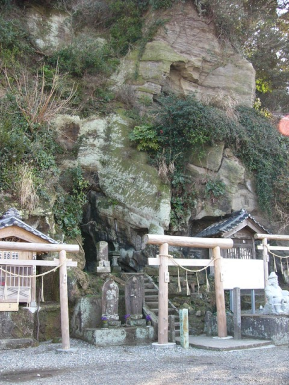

The four seasons
Hikari-Mo
It is said that Hikari-Mo reflect is the season when aburana bloom.
The Hikari-Mo grows naturally in the well which gushes a spring in the small cave called a Kogane-Ido.
In the cave at the season of aburana blooming, the alga was shining with golden color truly.

The signboard near the cave.
Although it is written in Japanese, the explanation is very interesting.

Kogane-Ido - the whole view
